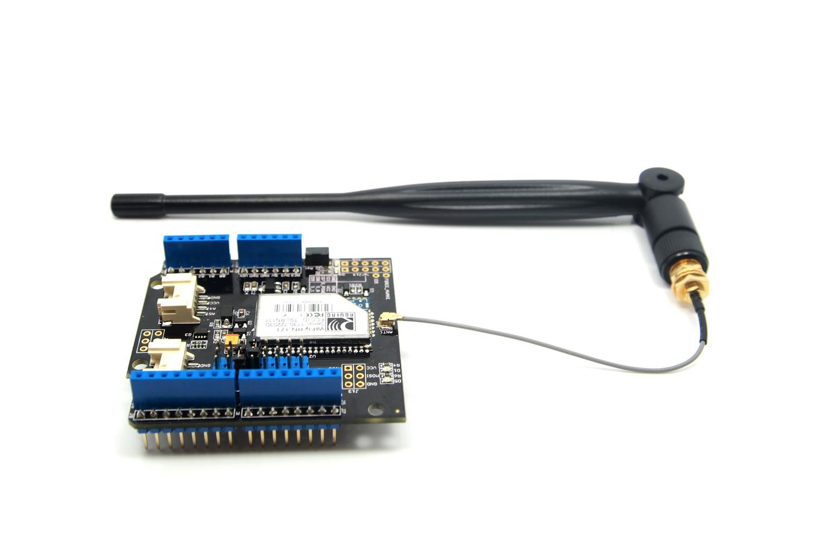
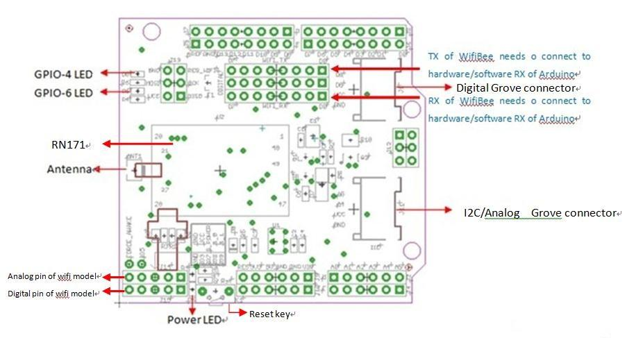
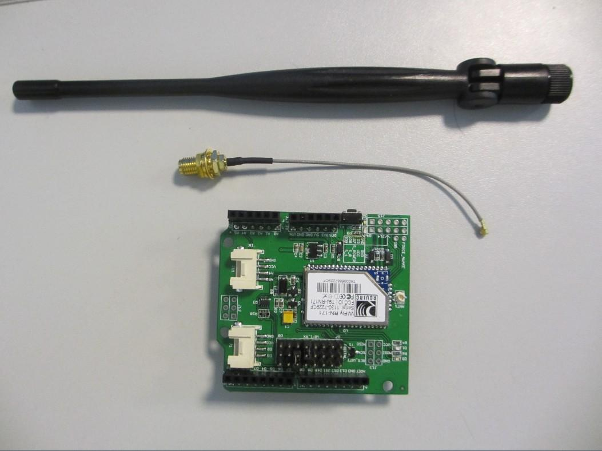
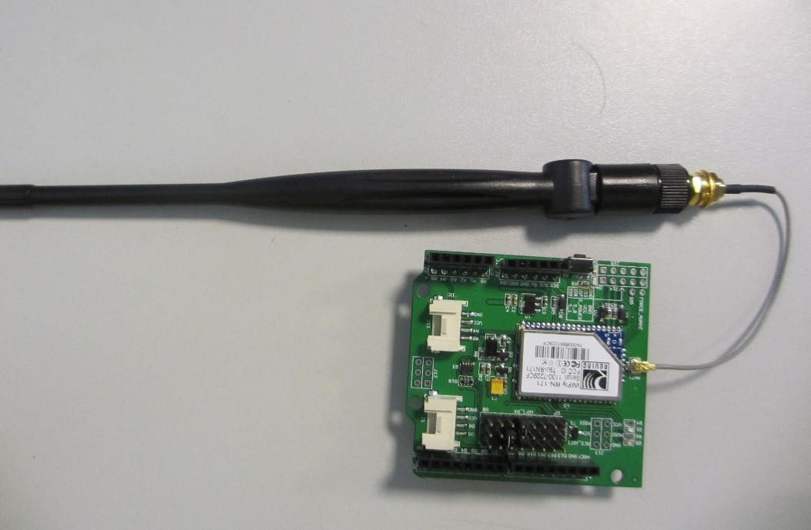
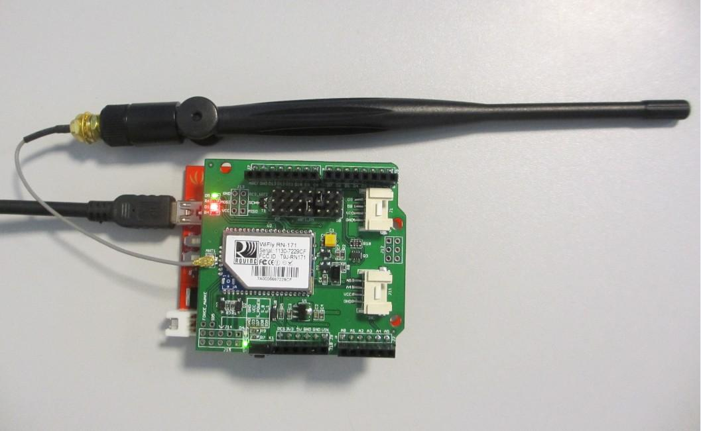
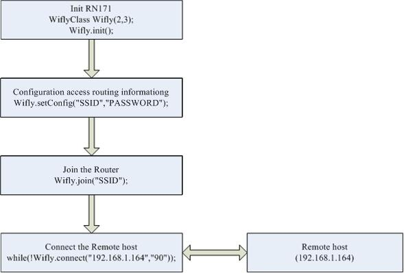
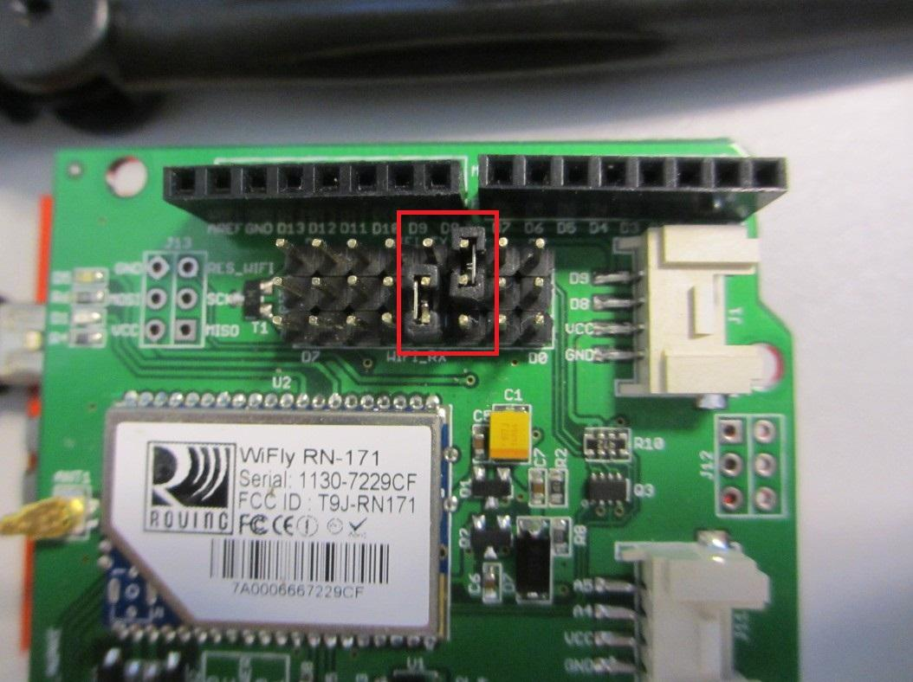
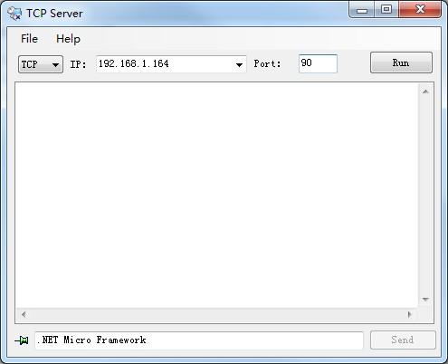
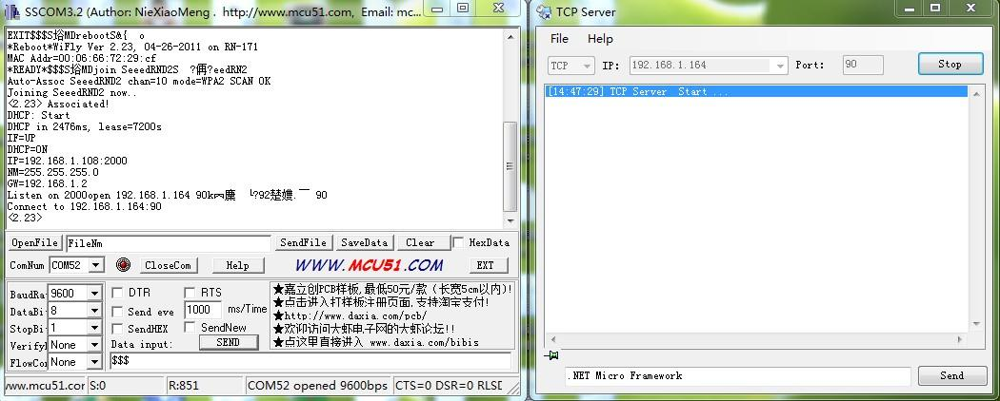
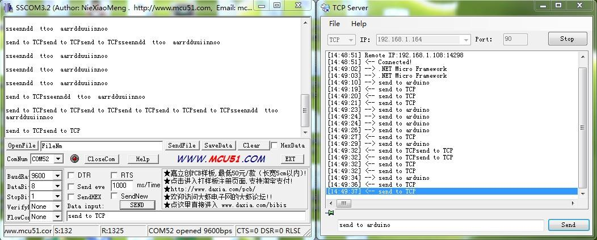

This Wifi Shield utilizes a RN171 wifi module to provide your Arduino/Seeeduino with serial Ethernet's function. It only takes two pins to hook your device up to 802.11b/g wireless networks with this shield. It features an independent antenna which can cover a wider range and transmit stronger signals. With supports for common TCP, UDP and FTP communication protocols, this Wifi Shield can meet needs of most wireless network projects, like smart home networks, robot controls or personal weather stations,etc. We prepared an easy and convenient command set for this shield so that you can use neat and concise code to run the function.

| Item | Min | Typical | Max | Unit |
|---|---|---|---|---|
| Voltage | 3.3 | 5 | 5.5 | VDC |
| Current | 25 | 60 | 400 | mA |
| Transmit power | 0-10 | dBm | ||
| Frequency | 2402~2480 | MHz | ||
|
Network rate |
1-11 Mbps for 802.11b/6-54Mbps for 802.11g | |||
| Dimension | 60x56x19 | mm | ||
| Net Weight | 20±2 | g | ||

The example we provided here is to show you how to connect this Wifi Shield to the Ethernet and get data exchanging between the shield and a virtual server started.
The package you receive should contain these parts: a Wifi Shield, an antenna and an antenna connector.

Assemble these parts together like the picture below.

Mount the shield onto your Arduino/Seeeduino

Ok, time to write some code.
First you have to make sure that Arduino1.0 has already been installed on your computer.

Download the wifishield library here Wifi Shield Library and unzip it into the libraries file of Arduino via this path: ..\arduino-1.0\libraries
Open a new sketch in Arduino-1.0, then copy the following code to your sketch.
#include "Wifly.h"
#include <SoftwareSerial.h>
WiflyClass Wifly(2,3);
void setup()
{
Serial.begin(9600);//use the hardware serial to communicate with the PC
Wifly.init();//Initialize the wifishield
Wifly.setConfig("SSID","PASSWORD");//here to set the ssid and password of the Router
Wifly.join("SSID");
Wifly.checkAssociated();
while(!Wifly.connect("192.168.1.164","90"));//connect the remote service
Wifly.writeToSocket("Connected!");
}
void loop()
{
if(Wifly.canReadFromSocket())
{
Serial.print(Wifly.readFromSocket());
}
if(Serial.available())
{
Wifly.print((char)Serial.read());
}
}
You need to do some modifications on this sketch according to your specific configuration.
1.Select Pin to connect the Serial Port of WIFI Module
WiflyClass Wifly(2,3);
The parameters 2 and 3 here represent RX and TX respectively for the software serial port. Based on this, pins of D2 and D3 should be shorted as the picture below. You can change the pin number as you like, just make sure corresponding changes on the shorted pins.

2.Fill in wireless network information
Wifly.setConfig("SSID","PASSWORD");//here to set the ssid and password of the Router
Wifly.join("SSID");
Fill the name of your target network into SSID and password into PASSWORD. For example, if you like to join the China-NET and its password is 12345678, then this line of code should be changed into:
Wifly.setConfig("China-NET","12345678");//here to set the ssid and password of the Router
Wifly.join("China-NET");
Note: 1.Router Security type just support WEP-128, WPA-PSK (TKIP), WPA2-PSK (AES)
2.Router must to connect Internet
3.Fill in the information of the remote server
while(!Wifly.connect("192.168.1.164","90"));//connect the remote service
In the upper line, "192.168.1.164" is the remote IP address of the virtual server, and "90" is the port information.
We provide a TCP Client software YFTCPServer.zip and serial port software SCCOM for testing purpose.
Open the TCP Client software you will see:

Change your lines according to the information you get from this software.
while(!Wifly.connect("192.168.1.164","90"));//connect the remote service
Upload the sketch.
Now run the TCP Client software first, then the serial port software, click the "OpenCom" button, wait until a message "<--Connected!" is printed on the screen of the virtual software.


Now you can communicate with the Wifi Shield via this serial port software.
For more detailed information about RN171, you can download the datasheet here RN171 Datasheet